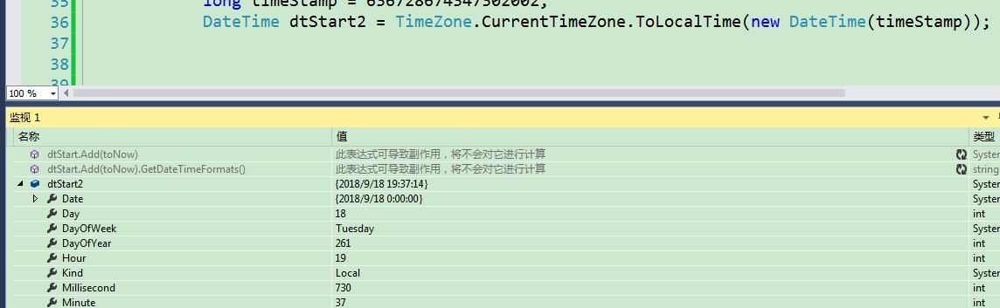

存取的时间戳数据为：
636728674347302002
怎样将其转换为DateTime时间。
目前大多数的策略是，转换成string，然后
DateTime dateTimeStart = TimeZone.CurrentTimeZone.ToLocalTime(new DateTime(1970, 1, 1));
long lTime = long.Parse(timeStamp + "0000000");
TimeSpan toNow = new TimeSpan(lTime);
dateTimeStart.Add(toNow);
试过，在Parse时提示int64过大或过小。
DateTime dtStart2 = TimeZone.CurrentTimeZone.ToLocalTime(new DateTime(timeStamp));
